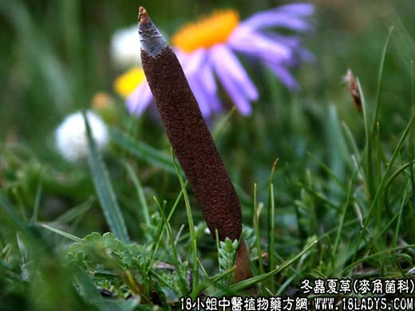

【中药概述】
冬虫夏草为麦角菌科真菌寄生在蝙蝠蛾科昆虫越冬幼虫体上的子座与虫体的复合体。甘、平。归肾、肺经。
1．补肾助阳：用于肾虚阳痿遗精、腰膝酸痛等，可配菟丝子 肉苁蓉 淫羊藿等。
2．补肺止血：用于肺虚或肺肾两虚之喘咳，呼多吸少，动则自汗，或劳嗽痰血等，可与麦门冬，五味子，阿胶等配伍。
3．用于病后虚弱或自汗畏寒，可与黄芪，五味子，胡桃仁等配伍。
【现代报道】
有明显增强巨噬细胞的吞噬功能，提示有促进免疫功能的作用。能扩张支气管平滑肌，增强肾上腺素作用，从而有一定的平喘效果。
【药效鉴别】
冬虫夏草与胡桃肉功能相近，配伍能增强补益肺肾之功。冬虫夏草偏于滋肺阴补肾阳，胡桃肉则善于敛肺气补肝肾。
【临证应用】
慢性气管炎、哮喘、肺气肿等，配黄芪，党参，五味子，胡桃肉，炙款冬花等；
虚劳咳喘外兼邪束肺、气急咳嗽痰多黄稠者，上方加用鱼腥草，金银花，瓜蒌，竹茹，炙麻黄，杏仁扶正祛邪并用。
【药理作用】
1．对免疫功能的影响：虫草及虫草菌浸剂可明显增加小鼠脾重，并拮抗泼尼松龙与环磷酰胺引起的脾重减轻。虫草和虫草菌使小鼠腹腔巨噬细胞的吞噬百分率和吞噬指数明显增加。并可明显提高小鼠血中胶体炭粒廓清速度。虫草多糖能对抗可的松引起的腹腔巨噬细胞功能的降低。
2．抗癌作用：虫草醇提取物腹腔注射可延长艾氏腹水癌小鼠的生存期，有效成分可能是一种多糖。
3．对心血管系统的作用：虫草水浸剂对离体蛙心、在体蛙心及兔离体的心脏均呈抑制作用，使心率减慢但心输出量却显著增加。虫草醇提取物可明显对抗乌头碱和氯化钡诱发的大鼠心率失常，也能对抗毒毛旋花子甙G所致豚鼠心律失常。
另外，虫草还有扩张支气管平滑肌、降血脂等作用。
【化学成分】
含粗蛋白，其水解产物为谷氨酸、苯丙氨酸、脯氨酸、缬氨酸、精氨酸、丙氨酸等。
【用量用法】
5——10g，水煎服，或与鸡、鸭、猪肉等炖服。
【使用注意】
有表证者不宜。
【注】
节肢动物门昆虫纲鳞翅目、蝙蝠蛾科、冬虫夏草蛾的干燥幼虫。以肉座菌科植物冬虫夏草菌寄生于幼虫体上的子座与幼虫尸体入药，叫“冬虫夏草”。
亚香棒虫草为霍克斯虫草菌CordycepshawkesiiGray寄生在昆虫幼虫上的子实体及幼虫尸体的复合体。本品表面灰褐色，头部有棕黑色光亮的硬壳，子座自头部上面或侧边长出，有时顶端有分枝，子座尖端无不孕顶端。气微，无草菇香气。湖南民间入药。